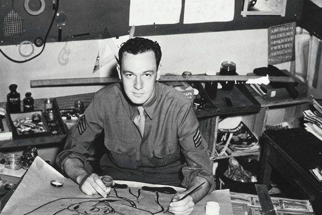
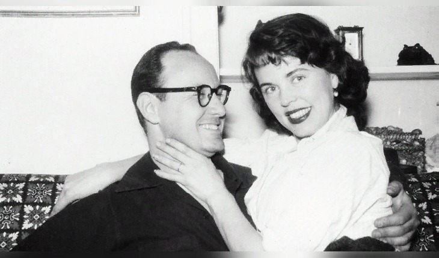

Стэнли Мартин Либер (англ. Stanley Martin Lieber), наиболее известный по псевдониму Стэн Ли (англ. Stan Lee) — знаменитый автор комиксов и бывший редактор издательства Marvel Comics, создавший таких известных на весь мир супергероев, как Человек-паук, Фантастическая четвёрка, Сорвиголова и Люди Икс. В двадцатом веке Ли также начал своеобразную актёрскую карьеру, появляясь в незначительных ролях в различных фильмах и телесериалах (в основном это были адаптации комиксов Marvel); он также значился исполнительным продюсером практически каждой экранизации комиксов издательства. Стэнли скончался осенью 2018 года в возрасте 95 лет.
Стэн Ли ушёл из жизни 12 ноября 2018 года в калифорнийском медицинском центре Седарс-Синай в возрасте 95 лет. 2018 год дался Стэну тяжело — в начале он заболел пневмонией, а затем был обвинён в сексуальных домогательствах и стал жертвой ограбления. На смерть автора комиксов отреагировали многие знаменитости, включая актёров, снимавшихся в фильмах по комиксам Marvel. За несколько дней до своей кончины Ли вместе со своей дочерью Джоан придумал нового супергероя по прозвищу «Человек-грязь». Джоан сказала, что идея обязательно получит развитие в будущем и выразился надежду, что новый персонаж станет героем кинофильмов.
 Свои первые комиксы Стэнли Либер начал рисовать в 1941 году. Они были очень простыми и проходили незаметно на фоне успехов, например, Капитана Америки Джо Саймона и Джека Керби. Он даже не хотел их публиковать под настоящей фамилией и придумал псевдоним, но именно они помогли ему найти свой путь в жизни.
Спустя какое-то время Стэн покинул свое первое место работы из-за разногласий с руководством и устроился в Timely Comics. Там в возрасте всего 18 лет его взяли на должность редактора и впоследствии повысили до арт-директора. Коньком Ли стали работы в жанре фэнтези, хоррор и сатиры.
Однако золотой век все же пришелся на серебряный век комиксов, то есть на начало 60-х. Тогда Timely требовались герои, которые могли бы сравниться по популярности с командой супергероев, в которую входили Бэтмен и Супермен. И Ли в сотрудничестве с еще несколькими художниками придумал «Фантастическую четверку» — команду астронавтов, которая получила суперспособности после того, как подверглись воздействию космических лучей.
История о Питере Паркере, которого укусил облученный радиацией паук, и так мир узнал о Человеке-пауке, который умеет ползать по небоскребам Нью-Йорка.
После этого Стэн Ли с командой создали «Черную пантеру», «Железного человека», «Халка», «Людей Икс» и прочих супергероев. В период своего расцвета Marvel продавала по 50 млн копий в год. В 1971 году Marvel Comics выкупило анимационную студию, назначило его креативным директором, и комиксы перевоплотились в мультипликационные сериалы, создание кинопроектов. Карьера Ли развивалась столь бурно, что сценаристу удалось стать президентом и председателем совета директоров Marvel.
В рассвете карьеры Ли стал продюсером всех сериалов и кино о героях издательства и даже стал сам сниматься в эпизодах своих фильмов. В частности, сценарная и продюсерская фильмография Ли исчисляется 210 и 160 проектами соответственно, но и актерская также вызывает уважение – более 75 картин. Его можно увидеть в эпизодах «Стражей галактики», «Венома», «Доктора Стрэнджа» и даже в «Мстителях»
 В 1947 году он женился на Джоан Клейтон Букок, а в 1953 году родился сын Ян. К сожалению, мальчику не суждено было вырасти, он скончался спустя три дня после родов. Стэн и Джоан любили Нью-Йорк и в качестве постоянного места жительства рассматривали только этот город. Они часто переезжали в разные районы, но в 80-х приобрели особняк в Западном Голливуде и осели там.
На протяжении многих лет жизни Джоан поддерживала мужа и вдохновляла на творчество, но в 2017 году ее не стало. Возлюбленная Ли скончалась в результате инсульта, также перешагнув 90-летнюю отметку.
Всего пара прожила вместе почти 70 лет. Параллельно с уходом жены у Ли стало плохо со здоровьем. Как-то он признался в значительном ухудшении зрения, из-за чего потерял возможность читать и писать, но продолжал участвовать в камео-ролях в фильмах Marvel.